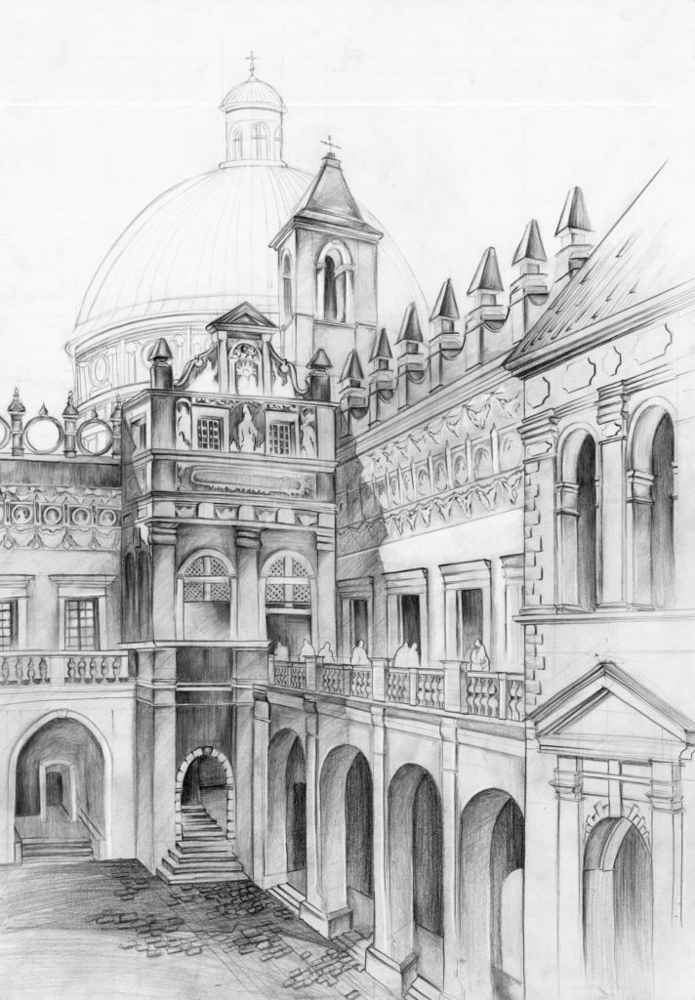

W ósmej klasie szkoły podstawowej napisałem projekt "Termometr" w Arduino, który oficjalnie działał. Zrobiłem stronę w html i w znam podstawy java. Jestem również zaznajomiony z podstawami SQL.
Chciałbym nauczyć się zaawansowanie spisać w Javie i umieć napisać samodzielnie projekt lub program. Moim celem również umieć znajdywać błędy oraz je poprawić, aby działały.
W przyszłości chciałbym mieć pracę związaną z Matematyką, fizyką lub ewentualnie informatyką i programowaniem. Myślę również nad znajdowaniem błędów w kodach, albo pisaniem własnych programów, lub stron internetowych. Myślełem też nad zostaniem architektem, dlatego chętnie się nauczę rysować.
